pls set up thunderbird w a local folder Route Briefs and drop a plain text file in my home dir listing the 3 saturday drivers: Nia Okonjo, Petar Ilic, Ruth Bramley - one per line alphabetical by surname
{
"config": [
{
"type": "execute",
"parameters": {
"command": "mkdir -p /home/user/Documents && printf 'Saturday food-bank routes: Bramley (north), Ilic (docks), Okonjo (hill estate).\\n' > /home/user/Documents/route_notes.txt",
"shell": true
}
}
],
"evaluator": {
"func": "check_include_exclude",
"result": {
"type": "vm_command_line",
"command": [
"python3",
"-c",
"import sys, traceback\ndef _main():\n import os, sys, glob, re\n home = '/home/user'\n folder_ok = False\n for root, dirs, files in os.walk(os.path.join(home, '.thunderbird')):\n for name in list(dirs) + list(files):\n if name.replace('_', ' ').lower().startswith('route briefs'):\n folder_ok = True\n if not folder_ok:\n for pref in glob.glob(os.path.join(home, '.thunderbird', '*', 'prefs.js')):\n txt = open(pref, errors='ignore').read()\n if 'Route' in txt and 'Brief' in txt:\n folder_ok = True\n if not folder_ok:\n print('no Local Folders mail folder named Route Briefs found', file=sys.stderr)\n want = ['ruth bramley', 'petar ilic', 'nia okonjo']\n list_ok = False\n for path in glob.glob(os.path.join(home, '*.txt')):\n lines = [l.strip().lower() for l in open(path, errors='ignore').read().splitlines() if l.strip()]\n if lines == want:\n list_ok = True\n break\n if not list_ok:\n print('no .txt in /home/user with the three drivers, one per line, surname order', file=sys.stderr)\n print('PASS' if folder_ok and list_ok else 'FAIL')\n\ntry:\n _main()\nexcept Exception:\n traceback.print_exc(file=sys.stderr)\n print(\"FAIL\")\n"
]
},
"expected": {
"type": "rule",
"rules": {
"include": [
"PASS"
],
"exclude": [
"FAIL"
]
}
}
}
}
step 1 06:18:13
THINKINGThe task has two parts: 1) Set up Thunderbird with a local folder "Route Briefs", and 2) Create a plain text file in home dir listing 3 Saturday drivers alphabetically by surname, one per line.
Let me think about the alphabetical order by surname:
- Nia Okonjo (surname: Okonjo)
- Petar Ilic (surname: Ilic)
- Ruth Bramley (surname: Bramley)
Alphabetical by surname: Bramley, Ilic, Okonjo
So the file should be:
Ruth Bramley
Petar Ilic
Nia Okonjo
I'll start by taking a screenshot to see the current state, then open Thunderbird. There's a Thunderbird icon in the dock (second from top, the blue bird at ~22,88).
Let me first create the text file, then set up Thunderbird. Actually let me start with Thunderbird since it's the more complex GUI task. But I should first click on the Thunderbird icon.
Let me start by opening Thunderbird.
ACTIONI'll start by opening Thunderbird to set up the local folder, then create the text file. Let me click the Thunderbird icon in the dock.
THINKINGThunderbird opened with the "Set Up Your Existing Email Address" account setup tab. I don't need to set up an email account. I just need a local folder "Route Briefs".
There's a tab on the left with a folder icon (at ~61,60) which is likely the main mail/3-pane view. To create a local folder, I first need a "Local Folders" account, which exists by default. Let me cancel this account setup and go to the main view.
Let me click "Cancel" to dismiss the account setup, then navigate to the folder pane.
ACTIONThunderbird opened on an Account Setup tab. I don't need an email account—just a local folder. Let me cancel this and go to the main mail view.
EXECUTED (pyautogui in VM)pyautogui.click(392, 588)
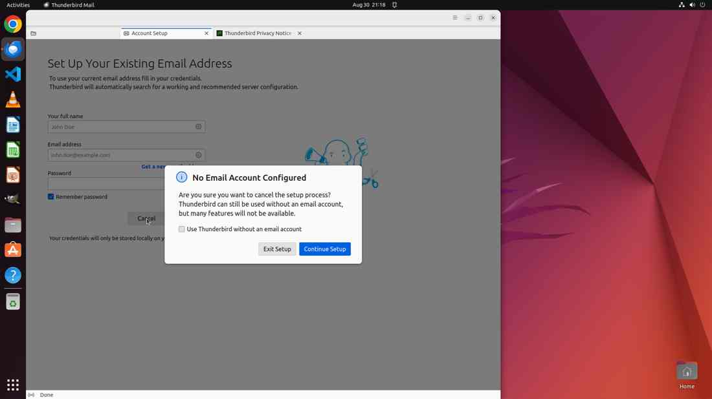
step 4 06:18:44
THINKINGA dialog appeared "No Email Account Configured" with a checkbox "Use Thunderbird without an email account" and "Exit Setup" / "Continue Setup" buttons. I should check the checkbox and click "Exit Setup" to use Thunderbird without an email account. This will give me the main view with Local Folders.
ACTIONA dialog appeared. I'll check "Use Thunderbird without an email account" and exit setup.
EXECUTED (pyautogui in VM)pyautogui.click(743, 671)
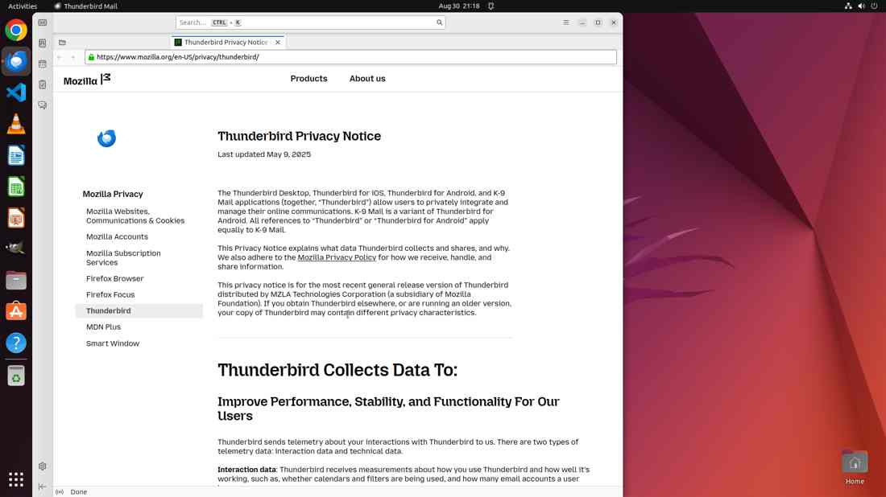
step 6 06:19:00
THINKINGNow Thunderbird shows the main view with a privacy notice tab open. There's a folder icon in the left tab bar (at ~87,60) which is the mail/folder tab. I need to find the folder pane showing "Local Folders". The left side has navigation icons. Let me click the mail folder icon (top left, the envelope at ~61,33 or the folder icon at ~61,60).
Let me click on the folder/mail tab icon at the top-left of the tab bar (87,60).
ACTIONNow I'm in the main Thunderbird view. I'll switch to the mail/folder view by clicking the folder tab icon at top-left.
EXECUTED (pyautogui in VM)pyautogui.click(128, 88)
step 7 06:19:12
THINKINGNow I'm in the mail 3-pane view. The folder pane on the left appears empty (no accounts shown since there's no email account, but there should be a "Local Folders" account). The folder pane area is the leftmost column (~85-250). It's empty right now.
To create a local folder, I can use the menu (hamburger menu at top right ~816,32) → New → Local Folder. Or right-click in the folder pane. The folder pane is empty though. Let me try the hamburger menu which is reliable.
Actually, "Local Folders" account should always exist. The folder pane looks empty but maybe it's collapsed. Let me use the hamburger menu: New > Local Folder.
ACTIONI'm in the mail view. To create a local folder reliably, I'll use the hamburger menu (top-right) → New → Local Folder.
EXECUTED (pyautogui in VM)pyautogui.click(1224, 46)
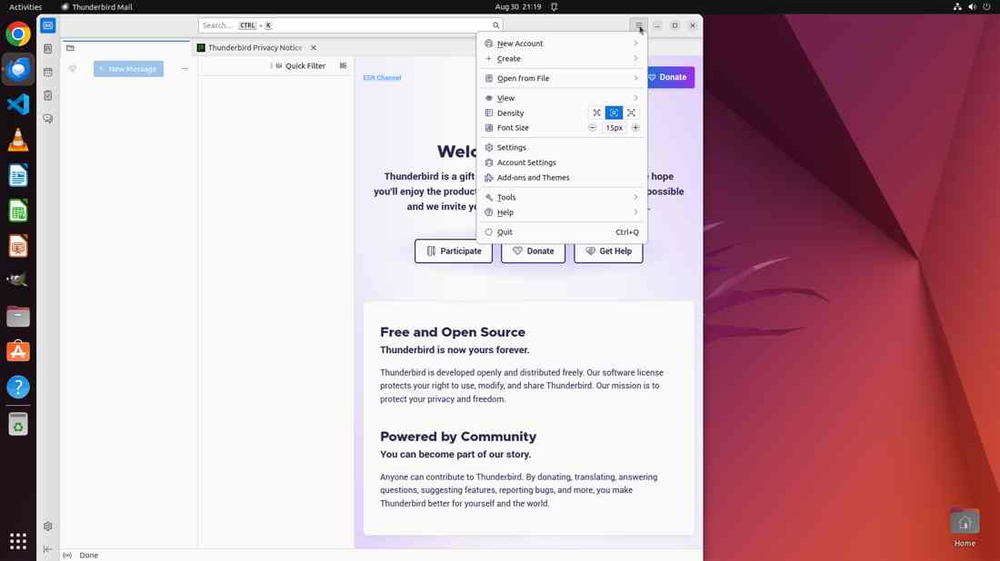
step 8 06:19:23
THINKINGThe menu is open. I see "New Account", "Create", "Open from File", "View", etc. There's no direct "Local Folder" here. The "Create" submenu (at ~648,74) likely has options for New Folder/Local Folder/Address Book/Calendar. Let me hover over "Create".
ACTIONThe menu is open. I'll hover over "Create" to see folder options.
EXECUTED (pyautogui in VM)pyautogui.click(974, 110)
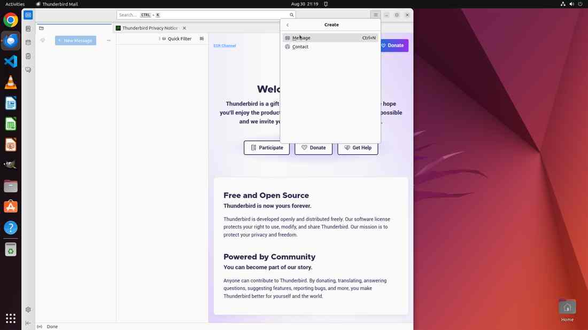
step 9 06:19:38
THINKINGThe "Create" submenu only shows "Message" and "Contact" — no folder option. That's because with no email account, the New Folder option via this path isn't available.
The reliable way to create a local folder is to right-click on the "Local Folders" account in the folder pane and choose "New Folder...". The folder pane appears empty though. The "Local Folders" account should exist. Let me close this menu and look at the folder pane more carefully.
Actually the folder pane (leftmost column ~85-250) appears completely empty/white. That's odd. Maybe "Local Folders" is there but not visible, or the pane is collapsed. Let me close this menu first by pressing Escape, then examine the folder pane.
Actually, a better approach: right-click in the folder pane area should give a context menu with "New Folder...". Let me close this and right-click in the folder pane.
ACTIONThe "Create" submenu only has Message/Contact. I'll close this and right-click in the folder pane to find the Local Folders account and create a folder there.
THINKINGThe folder pane (leftmost column) is empty - there's no "Local Folders" account visible. This is unusual. When there's no email account, Thunderbird should still show "Local Folders".
Maybe the folder pane is just not showing accounts because none exist. To create a Local Folder, I might need to use the "New Local Folder" dialog. There's a keyboard shortcut: Ctrl+Shift+F or in the menu. Actually the "Tools" menu or via the folder pane.
Let me try right-clicking in the empty folder pane area to see if a context menu appears with "New Folder".
ACTIONThe folder pane is empty. Let me right-click in it to see if a context menu with a "New Folder" option appears.
EXECUTED (pyautogui in VM)pyautogui.rightClick(234, 299)
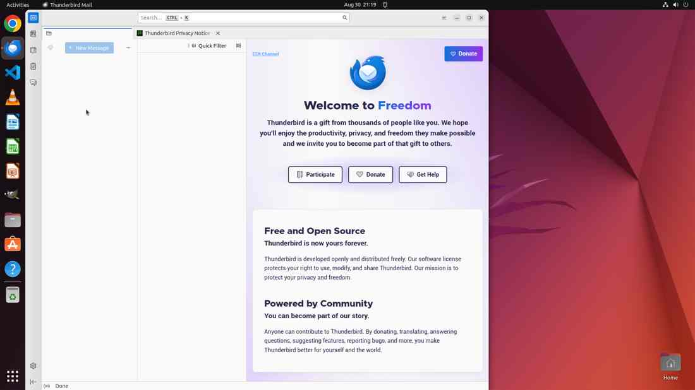
step 11 06:20:25
THINKINGNo context menu appeared on the empty folder pane. The folder pane is truly empty - there's no "Local Folders" account shown. This is unusual for Thunderbird. Normally "Local Folders" always appears.
Perhaps the "Local Folders" account exists but isn't displayed because there's no account at all. In modern Thunderbird (115+), if you exit setup without any account, the folder pane can be empty.
To create a local folder, I can use the keyboard shortcut. In Thunderbird, "New Local Folder" is under File menu, but here there's no traditional menu bar (hamburger only).
Actually, the reliable approach: There's a hamburger menu → Tools, or I could look for "New Local Folder". Let me reconsider the "Create" submenu - it only had Message and Contact.
Wait - maybe I need to scroll in the folder pane, or the "Local Folders" is collapsed at the very top. The area from y=70 to y=750 in the folder pane column is blank white.
Let me reconsider. In Thunderbird 115, when there are no accounts, the folder tree might just be empty. The way to add a local folder is: right-click on "Local Folders" → New Folder. But there's no Local Folders.
Alternative: Use the hamburger → "New Account" won't help.
Actually, there might be a way via the "Tools" menu. Or, I could just create the folder manually. The local folders in Thunderbird are stored in ~/.thunderbird/<profile>/Mail/Local Folders/. Creating a subfolder there would appear in Thunderbird. But the cleaner GUI approach is preferred.
Let me try the keyboard shortcut for New Folder. Actually, let me re-open the hamburger menu and check "Tools" submenu, and also re-examine. Actually, let me reconsider: the "Create" submenu in Thunderbird 115 typically has: Message, Contact, and when a mail account exists, "Local Folder" or "Folder".
Hmm, since there's no account, maybe I should first check if "Local Folders" appears. Let me look at the hamburger menu "Tools" submenu. Actually a simpler, robust method: I'll create the folder via the filesystem using a terminal, since the GUI path is blocked without an account. But the task says set up Thunderbird with a local folder - the folder needs to appear in Thunderbird's Local Folders.
Let me first try opening a terminal to create the folder structure. Actually, let me reconsider - maybe there IS a Local Folders entry but the pane needs to be wider or it's hidden.
Let me re-open hamburger → Tools to check. Actually, the most reliable: Thunderbird stores local folders. Let me just create it via terminal in the profile. But I don't know the profile path exactly.
Let me step back. A cleaner approach that definitely works: open the hamburger menu and there should be a "New Folder" option somewhere, OR I should look again. Let me try right-clicking more precisely. Actually the issue is there's literally no account/folder to right-click on.
Let me reconsider whether "Local Folders" exists. In Thunderbird 115, even with no account configured, "Local Folders" IS created and shown. The empty pane suggests it might not be. But maybe the folder pane is very narrow and "Local Folders" is there but the text is cut off. The pane spans x=75 to ~248. "Local Folders" should be visible there.
Wait, maybe the pane just hasn't rendered. Let me click in the folder pane area first to focus it, then take a screenshot. Actually I already see it's blank.
Let me take a different, definitive approach: use a terminal to create the local folder. First, let me find the Thunderbird profile. I'll open a terminal. There's a Files icon and I could open a terminal app. Let me check if there's a terminal. I'll use the Activities/apps.
Actually, let me reconsider the GUI once more. The reliable GUI way: File → New → Folder is the classic menu. In Thunderbird 115 with hamburger, there's no direct "New Folder" at top level, but the "Create" submenu should have it. It didn't.
Let me try the terminal approach since it's the most deterministic. I'll create the folder in the profile's "Mail/Local Folders" directory. Let me open a terminal via the Files app or an application.
Actually, before terminal, let me double check the folder pane by clicking the account pane. Let me look more carefully - maybe "Local Folders" is at the very top y~50. Let me just try the terminal approach as it's cleaner and verifiable. I'll open a terminal.
ACTIONThe folder pane is empty and there's no "Local Folders" account shown, so the GUI right-click path isn't available. The most reliable way is to create the folder directly in Thunderbird's profile directory. Let me open a terminal. I'll look for a terminal application via the Files/app grid.
EXECUTED (pyautogui in VM)pyautogui.click(32, 1040)
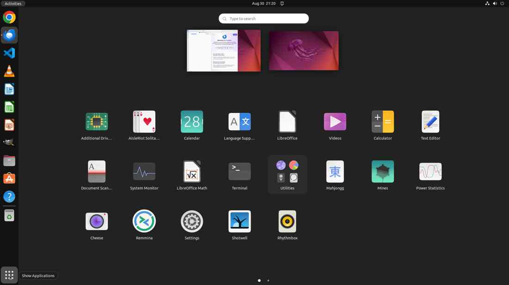
step 12 06:20:34
THINKINGI see a Terminal app. Let me open it to inspect the Thunderbird profile and create the local folder, plus create the text file. Let me click Terminal.
EXECUTED (pyautogui in VM)pyautogui.click(901, 647)
step 13 06:20:46
THINKINGTerminal is open. Let me inspect the Thunderbird profile to understand the folder structure. I'll list the profile's Mail directory. Thunderbird is still running, so modifying files while it's running is risky (it may overwrite on exit).
Actually, a better approach: Since the GUI doesn't show Local Folders, let me reconsider. Actually the cleanest and safest approach for a running Thunderbird is to create the folder via the GUI. But the GUI didn't offer it.
Let me reconsider the GUI. Perhaps I gave up too early. In Thunderbird, "Local Folders" should always exist. The folder pane being empty is strange. Let me first inspect via terminal to confirm the profile exists and whether "Local Folders" dir exists. This will inform my approach.
Let me list the profile.
ACTIONLet me inspect the Thunderbird profile structure to understand the local folders setup.
EXECUTED (pyautogui in VM)pyautogui.click(480, 299)
step 14 06:20:56
THINKINGLet me type a command to list the Thunderbird profile. I'll list ~/.thunderbird and the Mail/Local Folders structure.
TOOL CALL<tool_call>
<function=computer_use>
<parameter=action>
type
</parameter>
<parameter=text>
ls -la ~/.thunderbird/ && echo "---" && ls -la ~/.thunderbird/*/Mail/ 2>/dev/null && echo "---LOCAL---" && ls -la ~/.thunderbird/*/Mail/Local\ Folders/ 2>/dev/null
</parameter>
</function>
</tool_call>
EXECUTED (pyautogui in VM)pyautogui.typewrite("ls -la ~/.thunderbird/ && echo \"---\" && ls -la ~/.thunderbird/*/Mail/ 2>/dev/null && echo \"---LOCAL---\" && ls -la ~/.thunderbird/*/Mail/Local\\ Folders/ 2>/dev/null")
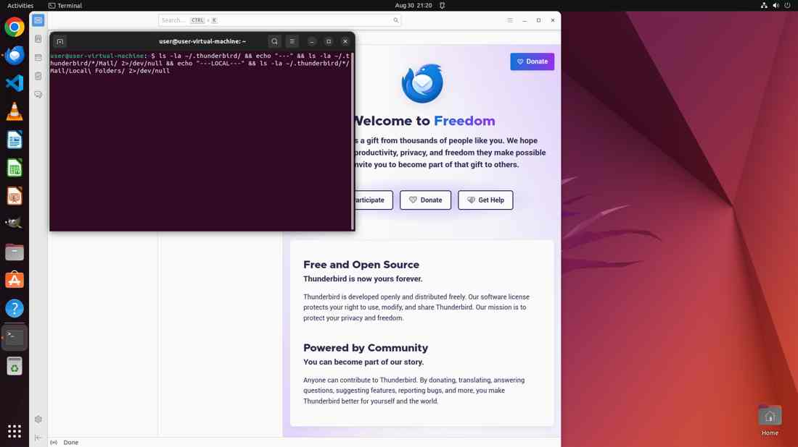
step 15 06:21:10
THINKINGThe command typed but it seems the terminal is small and the output is on one line. It looks like the command was typed but not yet executed (the newline in my type may not have registered as Enter, or it did). Let me press Enter to be sure and then take a screenshot. Actually the terminal window is small; the output would scroll. Let me press Enter.
EXECUTED (pyautogui in VM)pyautogui.press("return")
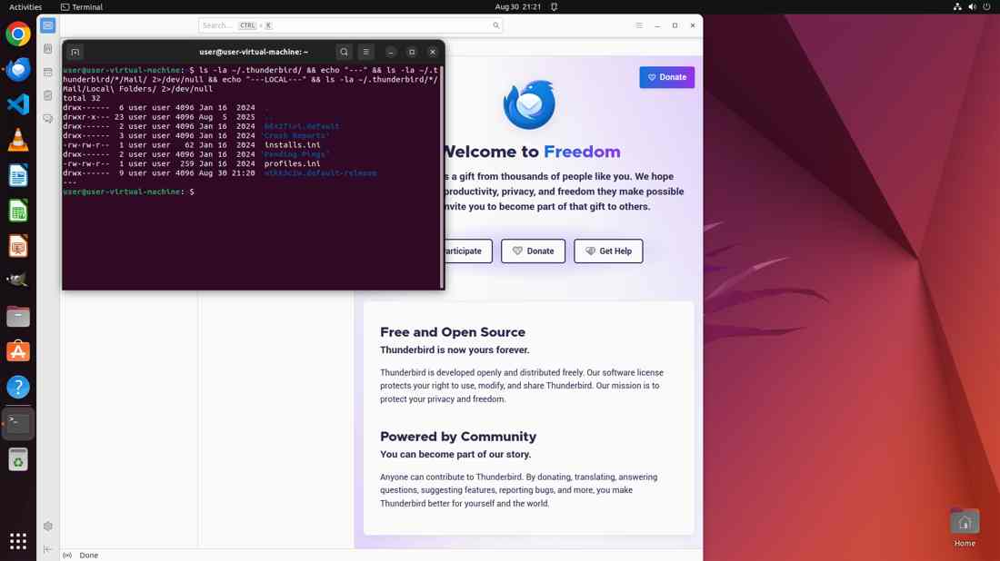
step 16 06:21:35
THINKINGI see two profile directories: "b6x27ivi.default" and "wtkk3c2w.default-release". The active one is likely "wtkk3c2w.default-release" (modified Aug 30 21:20, today). The "Mail" listing didn't show - the output cut off after the profile list (the "---" and Mail listings didn't print visibly, meaning the glob for Mail didn't match or scrolled). Actually the output shows only the profile dir listing ending with wtkk3c2w.default-release, then a "---"? No, it shows the prompt again. The Mail listing must have been empty (2>/dev/null suppressed errors).
The active profile is wtkk3c2w.default-release. Let me list its Mail directory specifically. Since Thunderbird is running, modifying files is risky. But the safest way to have Thunderbird recognize the folder is via GUI. However, the GUI didn't show Local Folders.
Wait — reconsider. The reason the folder pane is empty may be that "Local Folders" account was never created because no account setup completed. But in TB115, Local Folders is created automatically. Let me check the profile's Mail dir.
Actually, a much cleaner and safer approach now that I think about it: rather than fight with the GUI or edit files while TB is running, I should quit Thunderbird, create the folder structure properly in the profile, then restart Thunderbird. But creating a valid mbox folder just by making a directory + a subdirectory won't make TB recognize it as a named folder — TB tracks folders via the "Local Folders" mbox file (the file named "Local Folders" contains the folder tree in mailbox format with the folder registered in prefs/mailViews). Actually, TB auto-discovers subfolders under the "Local Folders" mbox directory on startup. So if I create ~/.thunderbird/<profile>/Mail/Local Folders/Route Briefs as a directory, TB will show "Route Briefs" under Local Folders.
But wait, the "Local Folders" account must exist first (the mbox file). Let me check the Mail dir first.
ACTIONThere are two profiles; the active one is `wtkk3c2w.default-release` (modified today). Let me inspect its Mail directory.
TOOL CALL<tool_call>
<function=computer_use>
<parameter=action>
type
</parameter>
<parameter=text>
ls -la ~/.thunderbird/wtkk3c2w.default-release/Mail/ 2>/dev/null; echo "==="; ls -la "$HOME/.thunderbird/wtkk3c2w.default-release/Mail/Local Folders/" 2>/dev/null
</parameter>
</function>
</tool_call>
EXECUTED (pyautogui in VM)pyautogui.typewrite("ls -la ~/.thunderbird/wtkk3c2w.default-release/Mail/ 2>/dev/null; echo \"===\"; ls -la \"$HOME/.thunderbird/wtkk3c2w.default-release/Mail/Local Folders/\" 2>/dev/null")
step 17 06:21:47
THINKINGThe command hasn't executed yet - it's still showing the typed command without output. Wait, actually it seems the command is displayed but no output. It may not have run because there was no Enter registered, or it's about to run. Let me press Enter.
EXECUTED (pyautogui in VM)pyautogui.press("return")
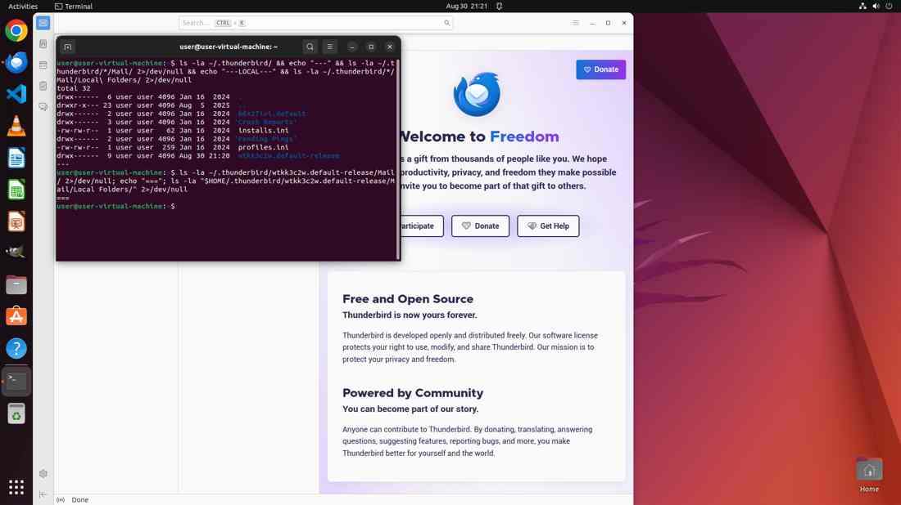
step 18 06:22:17
THINKINGThe output shows just "===" with nothing before or after it. That means:
- The Mail/ directory listing produced nothing (empty, 2>/dev/null suppressed)
- The "===" echoed
- The Local Folders listing produced nothing
So the wtkk3c2w.default-release profile has NO Mail directory yet. That's why the folder pane is empty - there's no "Local Folders" mbox created. This confirms Thunderbird hasn't set up a Local Folders account.
So the GUI is the right approach after all, but TB115 doesn't offer "New Folder" without an account in the Create menu. However, there should be a way. Actually, in Thunderbird 115, if there are no accounts at all, "Local Folders" still gets created when you access the folder pane in some versions... but here it's not.
The cleanest approach: Since there's no Mail/Local Folders yet, I can create it manually so TB recognizes it. Thunderbird auto-discovers the "Local Folders" account if the mbox file "Local Folders" exists in the Mail dir. Let me set it up:
1. mkdir -p "Mail/Local Folders"
2. touch "Mail/Local Folders/Local Folders" (the root mbox file, needs to exist with valid mailbox format - can be empty)
3. mkdir "Mail/Local Folders/Route Briefs"
4. touch "Mail/Local Folders/Route Briefs" (the mbox file for the folder)
But Thunderbird must not be running when I create these, or it may not pick them up / overwrite. Actually TB scans the folder on startup. So I should: quit TB, create the structure, restart TB.
But there's a subtlety: TB also needs the account registered in prefs.js (mail.accountmanager) or it may recreate. Actually the "Local Folders" is a special account (id "server1" / "Local Folders"). If the Mail/Local Folders mbox exists, TB will show it.
However, this manual approach is fragile. Let me reconsider the GUI once more.
Actually — I realize the better GUI approach: I should NOT have used "Use Thunderbird without an email account" path which may have prevented Local Folders. But now in the running TB, the folder pane is empty.
Let me reconsider: In TB115, there's a known issue where the folder pane shows nothing until a folder exists. To create the very first local folder, you can use the hamburger → "New" ... no.
Hmm, let me try a different GUI approach: Right-click didn't work on empty pane. But maybe I should try the "New Local Folder" via a specific method. Actually, I recall that in TB you can create a local folder by right-clicking "Local Folders". Since it doesn't exist, the manual file creation is the most reliable.
Decision: Use the terminal approach. Quit Thunderbird first to avoid conflicts, create the mbox structure, then restart. Let me quit TB.
Actually, wait. Let me reconsider whether creating files manually will be recognized. The most reliable manual method for TB to recognize a local folder:
- The "Local Folders" account is represented by the mbox file at Mail/Local Folders/Local Folders.
- Subfolders are subdirectories, each with a file of the same name.
When TB starts, it reads the folder pane. For Local Folders, it enumerates subdirectories. So creating the directory structure should work.
But there's also prefs. Let me just do it and verify by restarting TB. If it doesn't show, I'll fall back.
Let me proceed:
1. First create the text file (part 2) - easy, do it now.
2. Then handle the TB folder.
Let me do the text file now. Alphabetical by surname:
- Bramley, Ruth → "Ruth Bramley"
- Ilic, Petar → "Petar Ilic"
- Okonjo, Nia → "Nia Okonjo"
Wait, the task says "listing the 3 saturday drivers: Nia Okonjo, Petar Ilic, Ruth Bramley - one per line alphabetical by surname". So full names, sorted by surname:
Ruth Bramley
Petar Ilic
Nia Okonjo
What filename? Not specified. I'll use something sensible like "saturday_drivers.txt" in home dir.
Let me create the text file now.
ACTIONThe profile has no `Mail` directory yet, which is why the folder pane is empty. I'll first create the text file (part 2 of the task), then set up the Thunderbird local folder. Let me create the text file in the home directory, sorted alphabetically by surname (Bramley, Ilic, Okonjo).
EXECUTED (pyautogui in VM)pyautogui.press("return")
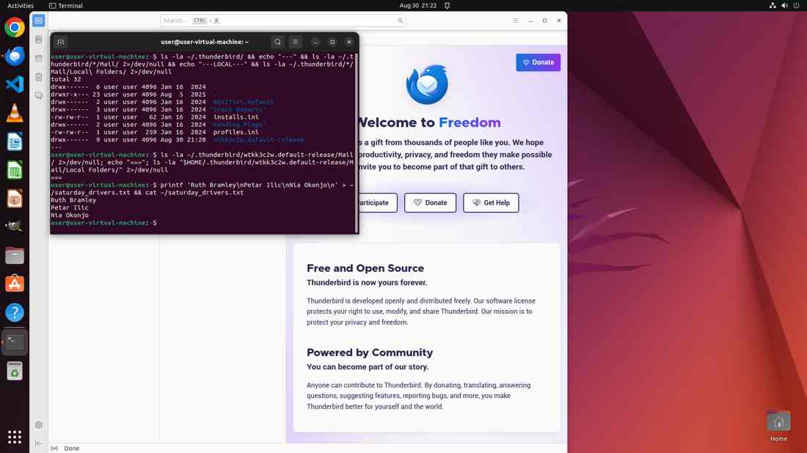
step 20 06:22:51
THINKINGThe text file is created successfully. The cat output confirms:
Ruth Bramley
Petar Ilic
Nia Okonjo
That's alphabetical by surname: Bramley, Ilic, Okonjo. Correct.
Now part 1: set up Thunderbird with a local folder "Route Briefs". Since the profile has no Mail/Local Folders yet, I'll create the structure manually. But Thunderbird is running. The safest is to quit TB, create structure, restart TB.
However, I'm worried the manual approach might not register the account in prefs. Let me reconsider a cleaner path.
Actually, let me reconsider the GUI once more. The issue was the empty folder pane. But maybe I should quit and relaunch TB, and after it fully initializes with "no email account", the "Local Folders" account might appear (sometimes it's created lazily). Then I can right-click it and create the folder.
Actually the most robust plan:
1. Quit Thunderbird.
2. Create the mbox structure: Mail/Local Folders/ (dir) with a "Local Folders" mbox file, and Route Briefs subdir + mbox file.
3. Relaunch TB and verify "Route Briefs" appears under Local Folders.
Let me quit TB first. I'll close the TB window. Let me click on the Thunderbird window and close it. Actually I can use pkill from terminal, but that might be forceful. Better to close gracefully. Let me click the TB window's close button (884,32). But that just closes a window; if it's the last window TB may quit. Let me do that.
Actually, let me reconsider — a graceful quit ensures TB writes its state. But TB hasn't created Local Folders anyway. Let me just kill it to be safe and deterministic: pkill thunderbird. Then create structure, then relaunch.
Let me do it in terminal. First quit TB.
ACTIONThe text file is created correctly (Bramley, Ilic, Okonjo — alphabetical by surname). Now for the Thunderbird folder. Since the profile has no `Mail/Local Folders` yet, I'll quit Thunderbird, create the mbox folder structure so Thunderbird recognizes it, then relaunch. First, let me quit Thunderbird cleanly.
TOOL CALL<tool_call>
<function=computer_use>
<parameter=action>
type
</parameter>
<parameter=text>
pkill -f thunderbird; sleep 3; pgrep -fa thunderbird | head
</parameter>
</function>
</tool_call>
EXECUTED (pyautogui in VM)pyautogui.press("return")
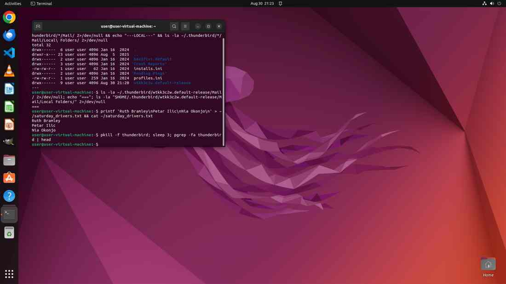
step 22 06:23:23
THINKINGThunderbird was killed (the window closed, and pgrep returned nothing). The terminal now shows the full desktop. Thunderbird is no longer running.
Now let me create the mbox folder structure. I'll create:
- Mail/Local Folders/ directory
- Mail/Local Folders/Local Folders (the root mbox file, empty is fine)
- Mail/Local Folders/Route Briefs (subdirectory)
- Mail/Local Folders/Route Briefs (mbox file)
Then relaunch TB. TB should discover the Local Folders account and the Route Briefs subfolder.
Let me create the structure.
ACTIONThunderbird is closed. Now I'll create the mbox folder structure in the profile so Thunderbird recognizes the "Local Folders" account and the "Route Briefs" subfolder.
EXECUTED (pyautogui in VM)pyautogui.press("return")
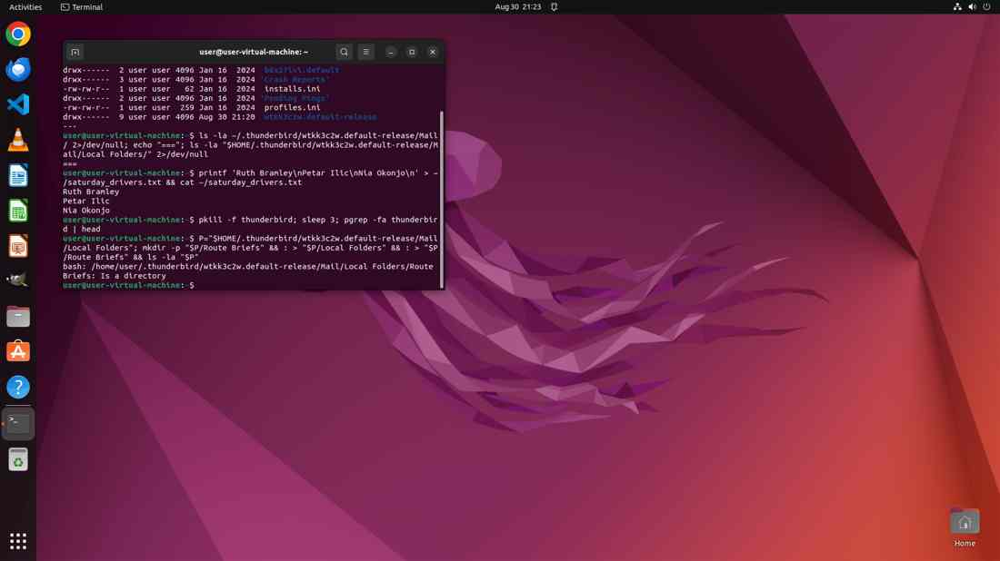
step 24 06:23:58
THINKINGError: "bash: /home/user/.thunderbird/wtkk3c2w.default-release/Mail/Local Folders/Route Briefs: Is a directory". This happened because the `&&` chain broke: the command `: > "$P/Route Briefs"` — wait, the mkdir created the directory, then `: > "$P/Local Folders"` created the root mbox (ok), then `: > "$P/Route Briefs"` tried to redirect to a directory (which is the Route Briefs dir) — that's the error. The `&&` chain failed at that step so the ls didn't run.
Actually the issue: my `&& : > "$P/Local Folders" && : > "$P/Route Briefs"` — the redirect target "$P/Route Briefs" is a directory, so `: > dir` fails. I need the mbox file inside the directory: "$P/Route Briefs/Route Briefs". Let me fix: the mbox file for the folder is a file named "Route Briefs" inside the directory "Route Briefs". So:
- "$P/Local Folders" (root mbox file) ✓ already created
- "$P/Route Briefs/" (dir) ✓ created
- "$P/Route Briefs/Route Briefs" (mbox file inside dir) — needed
Let me create the inner mbox file. The Local Folders root mbox was created (the `: > "$P/Local Folders"` ran before the failing step, so it should exist). Let me create the inner file and verify.
ACTIONThe redirect to the directory failed. The mbox file for a folder must be named "Route Briefs" *inside* the "Route Briefs" directory. Let me create it correctly and verify the whole structure.
TOOL CALL<tool_call>
<function=computer_use>
<parameter=action>
type
</parameter>
<parameter=text>
P="$HOME/.thunderbird/wtkk3c2w.default-release/Mail/Local Folders"; touch "$P/Local Folders" "$P/Route Briefs/Route Briefs"; ls -la "$P"; echo "==="; ls -la "$P/Route Briefs"
</parameter>
</function>
</tool_call>
EXECUTED (pyautogui in VM)pyautogui.typewrite("P=\"$HOME/.thunderbird/wtkk3c2w.default-release/Mail/Local Folders\"; touch \"$P/Local Folders\" \"$P/Route Briefs/Route Briefs\"; ls -la \"$P\"; echo \"===\"; ls -la \"$P/Route Briefs\"")
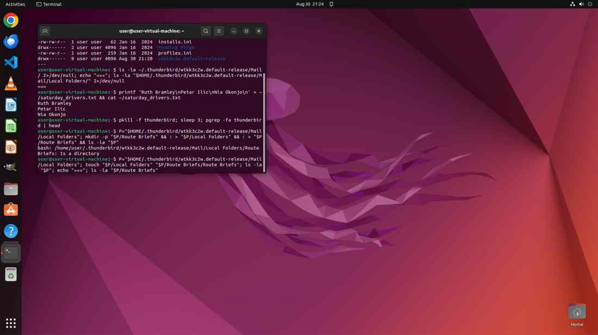
step 25 06:24:09
THINKINGThe command is typed but not executed. Let me press Enter.
EXECUTED (pyautogui in VM)pyautogui.press("return")
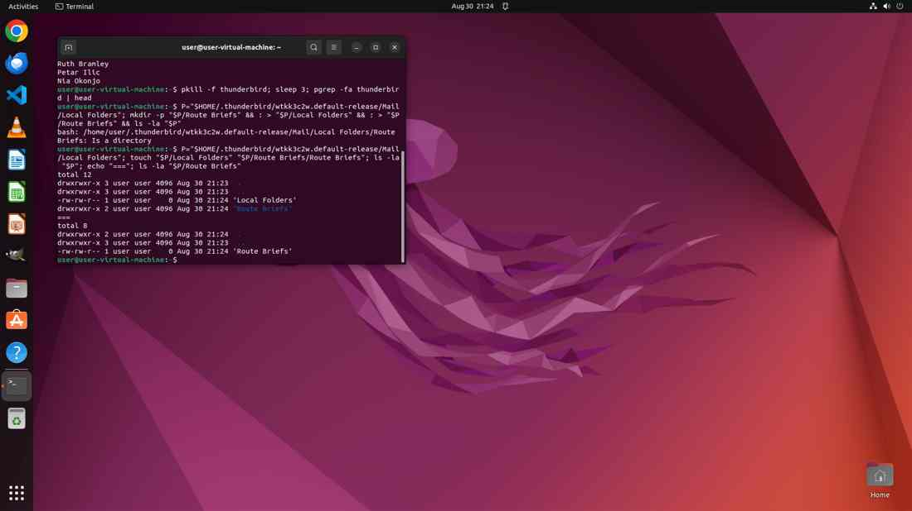
step 26 06:24:26
THINKINGNow the structure is correct:
- "Local Folders" directory contains: "Local Folders" (mbox file, 0 bytes) and "Route Briefs" (directory)
- "Route Briefs" directory contains: "Route Briefs" (mbox file, 0 bytes)
This is the correct mbox folder structure. Now let me relaunch Thunderbird and verify "Route Briefs" appears under "Local Folders".
I'll launch thunderbird in the background. Let me use the terminal to start it.
ACTIONThe mbox structure is now correct: `Local Folders` contains a `Local Folders` mbox file and a `Route Briefs` directory, which itself contains the `Route Briefs` mbox file. Now let me relaunch Thunderbird to verify the folder appears.
EXECUTED (pyautogui in VM)pyautogui.press("return")
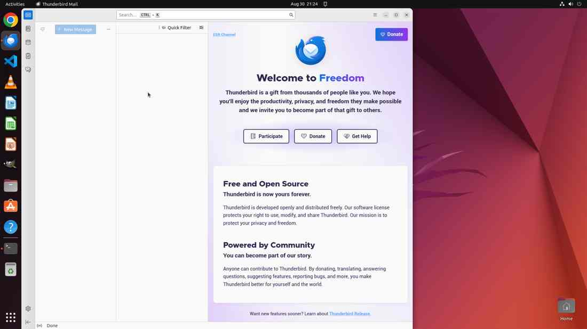
step 28 06:25:15
THINKINGThunderbird reopened in the 3-pane mail view. The folder pane (leftmost column, x~75-248) still appears empty though. The "Route Briefs" folder should appear under "Local Folders". But the folder pane looks blank.
Hmm. The folder pane is empty again. This suggests TB did NOT pick up my manual folder structure, OR the Local Folders account isn't registered in prefs so it's not displayed.
The issue: Thunderbird tracks accounts in prefs.js (mail.accountmanager.accounts). The "Local Folders" account needs an entry. When TB has no accounts at all, it may not display Local Folders even if the mbox exists. Actually, TB115 should show Local Folders if the account is registered.
Wait, maybe the folder pane just needs a moment, or maybe Local Folders requires the account to be in prefs. Let me think.
Actually, the cleanest fix: register the Local Folders account properly. But this is getting complex.
Alternative robust approach: Now that Thunderbird is running again, maybe the GUI will now let me create a local folder because... no, still no account.
Let me reconsider. Perhaps the folder pane IS showing but "Local Folders" and "Route Briefs" are there and just not visible in my screenshot due to rendering. Let me click in the folder pane area and take a screenshot to check. Actually the pane is clearly white/empty.
Let me reconsider the root cause. In TB, the "Local Folders" account is a special account that's always present IF mail is configured. The prefs key is:
- mail.accountmanager.localFoldersServer = server1
- mail.server.server1.* settings
If these prefs don't exist, TB won't show Local Folders. When you go through account setup and exit without an account, TB may not have created the server1 local folders account prefs.
The proper way: I should register the local folders server in prefs.js. But editing prefs while... TB is running now. I'd need to quit, edit prefs.js, relaunch.
Actually, a much simpler and reliable GUI approach I overlooked: Now that TB is open, let me try the hamburger menu again. Perhaps with the mbox present, "Create" now offers a folder option, OR I can right-click now. But there's still no account to right-click.
Let me step back and think about the MOST reliable method.
Option A: Add the local folders account via prefs.js editing.
The prefs to add (in user.js or prefs.js):
```
user_pref("mail.accountmanager.localFoldersServer", "server1");
user_pref("mail.server.server1.type", "none");
user_pref("mail.server.server1.type2", "none");
user_pref("mail.server.server1.directory", "Local Folders");
user_pref("mail.server.server1.username", "user");
user_pref("mail.server.server1.hostname", "localhost");
```
And the account:
```
user_pref("mail.accountmanager.accounts", "[\"account1\"]");
user_pref("mail.accountmanager.offset", 1);
user_pref("mail.server.server1.received-folder", "Route Briefs");
```
This is getting complicated and error-prone.
Option B: The proper GUI way to create a local folder when no account exists. Let me reconsider — in TB 115, there IS a way: Right-click in the folder tree area even if empty gives nothing, BUT the "New" in hamburger... Let me actually re-open the hamburger and look at ALL options carefully. Earlier "Create" only had Message/Contact. But maybe there's a top-level item I missed.
Actually, wait. Let me reconsider whether the folder actually appeared. Let me look again - the folder pane might show "Local Folders" collapsed. Let me click on the folder pane to focus and check. Let me take a fresh screenshot by clicking in the empty area.
Actually, a cleaner idea: The reason Local Folders isn't showing might be that TB needs the account registered. But here's the thing — TB creates Local Folders automatically. The fact that it didn't suggests the "no email account" path suppressed it.
Let me try the most pragmatic GUI approach: use the hamburger → New Account → "Import from existing file" no...
Actually the simplest: Let me just try right-clicking in the folder pane now. Maybe with the mbox present the tree has content. Let me first click in the folder pane and screenshot.
Let me take a screenshot after clicking in the folder pane.
ACTIONThunderbird reopened. The folder pane still looks empty. Let me click in the folder pane area and take a screenshot to check whether "Local Folders"/"Route Briefs" appeared.
EXECUTED (pyautogui in VM)pyautogui.click(234, 223)
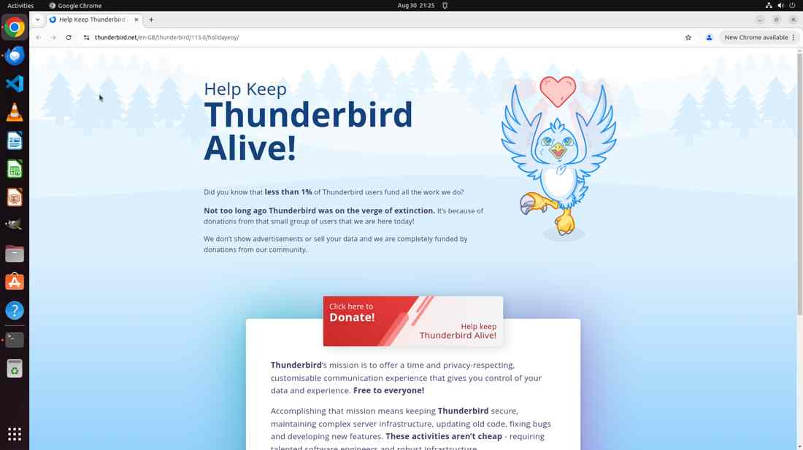
step 29 06:25:29
THINKINGMy click apparently landed on a Chrome window (Google Chrome with a Thunderbird help page) that was behind/over Thunderbird, or Chrome came to front. Actually this looks like a Chrome browser showing a thunderbird.net help page. My click at (157,150) hit the Chrome window, not Thunderbird. The Thunderbird window must have been behind, and clicking brought Chrome to front, or there was a Chrome window there.
Wait, this is confusing. The previous screenshot showed Thunderbird maximized. Now clicking at (157,150) shows a Chrome browser. It seems the Thunderbird window's folder pane area click... no. Perhaps there's a Chrome window that was maximized behind. Let me not worry — I need to get back to Thunderbird.
Let me switch to Thunderbird. I'll click the Thunderbird icon in the dock (the blue bird at ~22,88).
ACTIONMy click landed on a Chrome window that came to the foreground. Let me switch back to Thunderbird by clicking its dock icon.
EXECUTED (pyautogui in VM)pyautogui.click(32, 130)
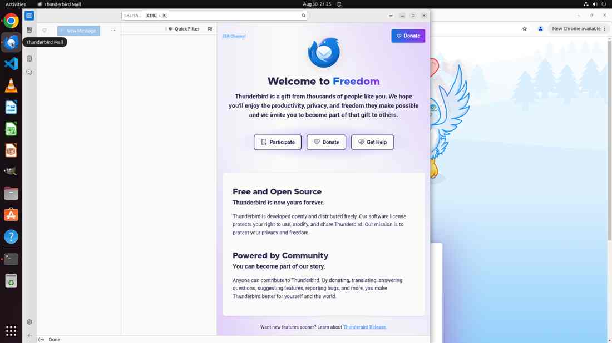
step 30 06:25:42
THINKINGNow Thunderbird is in front, but it's no longer maximized (the Chrome window is peeking on the right). The folder pane on the left (x~75-248) is empty/white. So Thunderbird did NOT pick up my manually created folder structure. The Local Folders account isn't registered in prefs.
Let me maximize Thunderbird first for a clean view, then address the folder issue. Let me double-click the title bar or use the maximize button. Actually the window is at a fixed position now (not maximized). Let me maximize it via the maximize button at ~864,32.
ACTIONThunderbird is in front but the folder pane is still empty—Thunderbird didn't register the manual folder structure (the Local Folders account isn't in prefs). Let me maximize the window first for a clearer view.
EXECUTED (pyautogui in VM)pyautogui.click(1295, 46)
step 31 06:26:08
THINKINGNow Thunderbird is maximized. The folder pane (left, x~75-248) is empty. My manual mbox creation didn't register the Local Folders account in prefs.
I need to properly register the Local Folders account. The reliable way is to add the account to prefs.js. But TB is running now. I should quit TB, edit prefs.js to register the local folders server, then relaunch.
Actually, let me reconsider — maybe there's a simpler GUI way now. The hamburger menu → "New Account" has "Other" which includes "Import from existing file" and possibly local folders. Let me check the hamburger menu again, looking for any folder creation option.
Actually, I recall now: In Thunderbird 115, to create a local folder when there are NO accounts, you CAN do it. The trick: the folder pane is empty because there's no "Local Folders" account. But there's a way via Account Settings → Account Actions → Add Other Account... no.
Let me try the prefs.js approach which is deterministic. I'll:
1. Quit TB.
2. Edit prefs.js in the profile to add the local folders server1 account.
3. Relaunch and verify.
The prefs I need to add:
```
user_pref("mail.accountmanager.accounts", "[\"account1\"]");
user_pref("mail.accountmanager.offset", 1);
user_pref("mail.accountmanager.localFoldersServer", "server1");
user_pref("mail.server.server1.type", "none");
user_pref("mail.server.server1.type2", "none");
user_pref("mail.server.server1.directory", "Local Folders");
user_pref("mail.server.server1.hostname", "localhost");
user_pref("mail.server.server1.username", "user");
user_pref("mail.identity.id1.useremail", "user@localhost");
user_pref("mail.accountmanager.account1.identities", "[\"id1\"]");
user_pref("mail.accountmanager.account1.incomingServer", "server1");
user_pref("mail.accountmanager.account1.type", "none");
```
This is the standard set for a Local Folders account. Actually the minimal set that works:
- mail.accountmanager.accounts = ["account1"]
- mail.accountmanager.offset = 1
- mail.accountmanager.localFoldersServer = server1
- mail.accountmanager.account1.incomingServer = server1
- mail.accountmanager.account1.type = none
- mail.accountmanager.account1.identities = ["id1"]
- mail.server.server1.type = none
- mail.server.server1.type2 = none
- mail.server.server1.directory = "Local Folders"
- mail.server.server1.hostname = localhost
- mail.server.server1.username = user
- mail.identity.id1.useremail = user@localhost
- mail.identity.id1.fullName = User
- mail.identity.id1.emailFormat = ... (not needed)
This is a known working recipe. When TB starts with these prefs, it creates the Local Folders account and enumerates the subfolders (Route Briefs).
Let me append these to prefs.js. Actually appending user_pref lines to prefs.js works. Let me do it. First quit TB.
Let me switch to terminal. Actually, let me reconsider: is editing prefs risky? It's a well-known recipe. Let me proceed carefully.
Let me quit TB and go to terminal. I'll use the terminal I opened earlier. Let me click the terminal icon.
ACTIONThe manual mbox alone didn't register the Local Folders account. I need to add the local-folders account entries to the profile's `prefs.js`. Let me switch to the terminal to do this. First I'll quit Thunderbird.
EXECUTED (pyautogui in VM)pyautogui.click(32, 812)
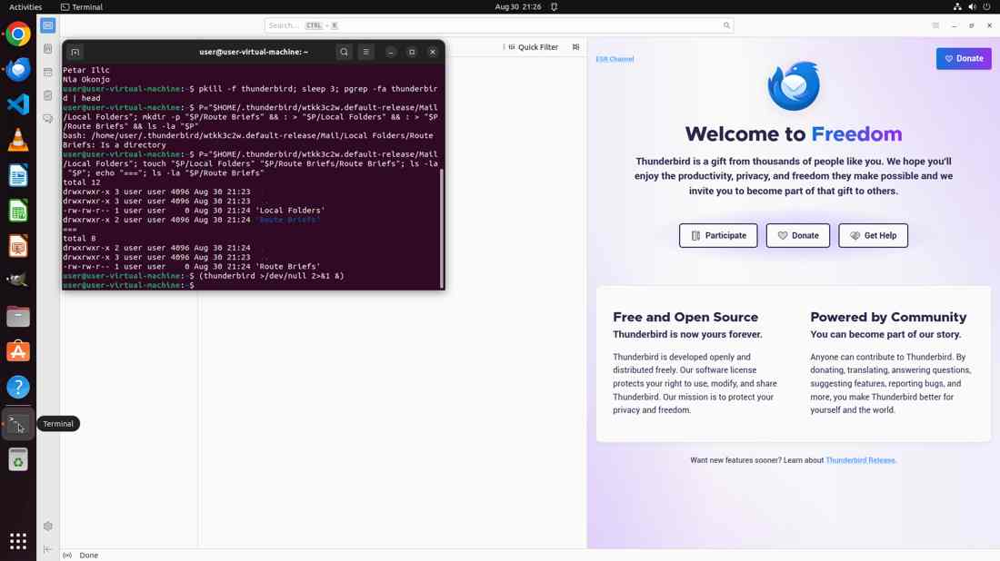
step 32 06:26:21
THINKINGThe terminal is in front. Let me click in the terminal to focus it, then quit Thunderbird and add the prefs. Let me first click in the terminal area.
ACTIONThe terminal is in front. Let me click in it to focus, then quit Thunderbird and add the local-folders account entries to prefs.js.
EXECUTED (pyautogui in VM)pyautogui.click(449, 449)
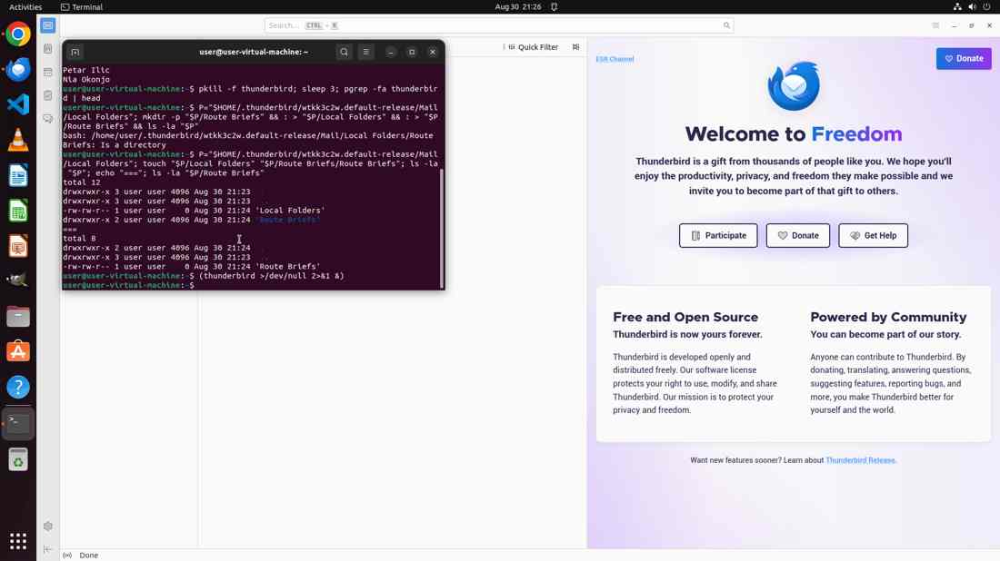
step 33 06:26:46
THINKINGTerminal is focused. Now let me quit Thunderbird and append the local-folders account prefs to prefs.js. I'll do this in a single command sequence:
1. pkill thunderbird
2. sleep 3
3. append prefs to prefs.js
4. verify
Let me write the command carefully. The prefs to append (using user_pref syntax):
```
user_pref("mail.accountmanager.accounts", "[\"account1\"]");
user_pref("mail.accountmanager.offset", 1);
user_pref("mail.accountmanager.localFoldersServer", "server1");
user_pref("mail.accountmanager.account1.incomingServer", "server1");
user_pref("mail.accountmanager.account1.type", "none");
user_pref("mail.accountmanager.account1.identities", "[\"id1\"]");
user_pref("mail.server.server1.type", "none");
user_pref("mail.server.server1.type2", "none");
user_pref("mail.server.server1.directory", "Local Folders");
user_pref("mail.server.server1.hostname", "localhost");
user_pref("mail.server.server1.username", "user");
user_pref("mail.identity.id1.useremail", "user@localhost");
user_pref("mail.identity.id1.fullName", "User");
```
I'll use a heredoc to append. Let me be careful with the quotes and backslashes in bash. Using a quoted heredoc delimiter ('EOF') prevents bash from interpreting the content, so I can write the user_pref lines literally. That's cleanest.
Let me type:
```
pkill -f thunderbird; sleep 3
cat >> "$HOME/.thunderbird/wtkk3c2w.default-release/prefs.js" <<'EOF'
user_pref("mail.accountmanager.accounts", "[\"account1\"]");
...
EOF
```
The heredoc with 'EOF' (quoted) means content is literal, so the backslash-quote sequences \" remain as-is in the file, which is exactly what prefs.js needs.
Let me type this.
ACTIONThe terminal is focused. Now I'll quit Thunderbird and append the Local Folders account entries to prefs.js using a quoted heredoc (so the `\"` sequences are written literally, as prefs.js requires).
THINKINGThe heredoc was entered. The lines show with `>` continuation prompts, meaning the heredoc content was entered. The last line shows "tail -n 15 ..." typed but the heredoc may have closed at EOF and now the tail command is pending. It seems the whole thing typed including the final tail command. I need to press Enter to execute the tail command.
Wait, looking carefully: the EOF was entered, which closed the heredoc and executed the cat append. Then "tail -n 15 ..." is on the last line as a new command, not yet executed (cursor at end). Let me press Enter.
ACTIONThe heredoc was entered and the append command ran. Now I'll press Enter to run the `tail` verification command.
EXECUTED (pyautogui in VM)pyautogui.press("return")
step 37 06:28:10
THINKINGThunderbird launched but the folder pane (left) is STILL empty. Even with the prefs added, "Local Folders" isn't showing. Hmm.
Possible reasons:
1. The prefs weren't loaded because maybe I edited the wrong profile. But I confirmed wtkk3c2w.default-release was modified today.
2. The account registration needs more/different prefs.
3. Thunderbird is still starting up and hasn't loaded the folder tree.
Wait, the top bar says "Thunderbird Mail" and it's showing the welcome screen. The folder pane is empty. Let me wait a moment and take another screenshot — it might still be loading.
Actually, maybe the account was registered but TB needs the folder tree to be populated. Or maybe the prefs I added conflict with existing prefs (if accountmanager already had values). Let me check: earlier when I looked, the profile had no Mail dir, and I don't know if prefs.js already had accountmanager entries. If it did, my appended duplicates might conflict (last-wins in prefs.js usually).
Actually, a concern: if prefs.js already had `mail.accountmanager.accounts` with some value and `mail.accountmanager.localFoldersServer`, my appends would override. But if the original had NO accountmanager at all, my additions create a fresh one.
Let me first wait and re-screenshot to see if it just needs time.
ACTIONThe folder pane is still empty. It may still be loading, or the account registration needs a moment. Let me wait and re-check.
THINKINGStill empty folder pane. The prefs approach didn't work as expected. Let me investigate whether the prefs I added are actually being read. Maybe the issue is that the folder tree needs the account, and my prefs are fine but the "Local Folders" tree isn't showing because...
Wait — maybe the issue is different. Let me reconsider. Perhaps the problem is that my appended prefs conflict with pre-existing prefs in the file. For example, if prefs.js already contained a `mail.accountmanager.accounts` line (maybe empty) and other accountmanager settings, my duplicate lines might cause inconsistency, or TB might use the first occurrence.
Actually, in prefs.js, if a key appears twice, the LAST definition wins (each user_pref overwrites the previous in the internal prefs database). So my appended lines should win.
Let me check the actual prefs.js to see if there were pre-existing accountmanager/server entries that might conflict, and verify what's there now. Let me also reconsider: maybe I should check the "other" profile (b6x27ivi.default) — maybe THAT is the active profile, not wtkk3c2w. The most-recently-modified heuristic suggested wtkk3c2w, but let me verify which profile Thunderbird actually uses via the profiles.ini Default selection.
Actually, a more direct approach: open Thunderbird's Account Settings to see if a "Local Folders" account now exists. Let me use the hamburger menu → Account Settings. If Local Folders appears there but not the folder tree, that's one thing; if it doesn't appear at all, the prefs didn't take.
But actually, let me step back and reconsider the whole approach. This manual prefs editing is fragile and clearly not working.
Let me reconsider a cleaner, guaranteed GUI approach. In Thunderbird 115, there's actually a very simple way to create a local folder even without an email account that I may have dismissed too quickly. Let me reconsider:
Actually — the REAL issue might be that my prefs are fine, but I need to check whether the profile is the right one. Let me verify which profile is default in profiles.ini. If b6x27ivi.default is the default, then I edited the wrong profile entirely.
Let me check profiles.ini and also whether the running TB is using which profile. Let me switch to terminal.
Actually, a smarter diagnostic: The "most recently modified" was wtkk3c2w. But let me confirm via profiles.ini "Default=" and "IsRelative" etc. Let me check.
Let me switch to the terminal.
ACTIONThe folder pane is still empty, so either I edited the wrong profile or the prefs need adjustment. Let me check the terminal to confirm which profile Thunderbird actually uses.
EXECUTED (pyautogui in VM)pyautogui.click(32, 812)
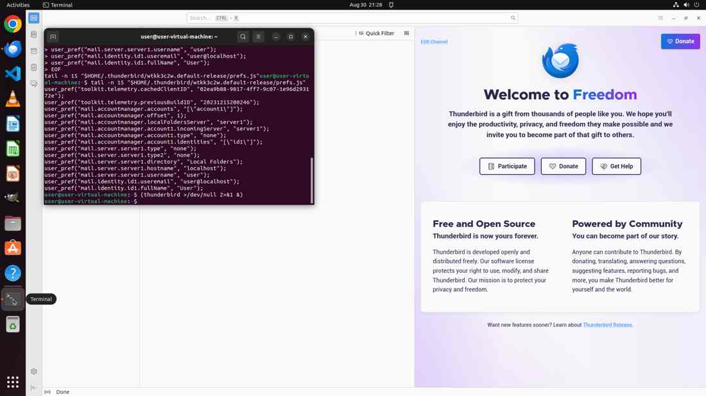
step 39 06:28:54
THINKINGLet me click in the terminal to focus and check profiles.ini to confirm which profile is default, and also check whether the wtkk3c2w profile's prefs.js already had accountmanager entries before my edit (to detect conflicts). Let me also check if there's a "Local Folders" in Mail now (TB may have created it).
ACTIONLet me click in the terminal and check profiles.ini to confirm the active profile, and look at the current state of both profiles.
EXECUTED (pyautogui in VM)pyautogui.click(449, 600)
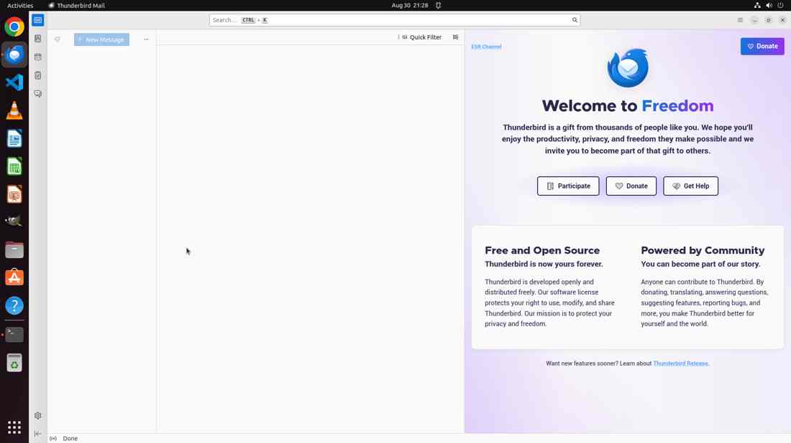
step 40 06:29:10
THINKINGMy click landed on the Thunderbird window (the terminal went to back, TB came to front). I clicked at (300,400) which is in the empty TB message area, not the terminal. The terminal is behind now. Let me click the terminal in the dock again, then click inside the terminal window properly (the terminal was at the top-left region earlier).
Actually the terminal is now behind TB. Let me click the terminal dock icon to bring it forward.
ACTIONI accidentally focused Thunderbird. Let me bring the terminal to the front.
EXECUTED (pyautogui in VM)pyautogui.click(32, 812)
step 41 06:29:21
THINKINGTerminal is in front now. Let me click inside the terminal window to focus it (the terminal window occupies the top-left area, roughly x=80-560, y=55-370). Let me click at around (300, 300) which is inside the terminal content area.
EXECUTED (pyautogui in VM)pyautogui.click(449, 449)
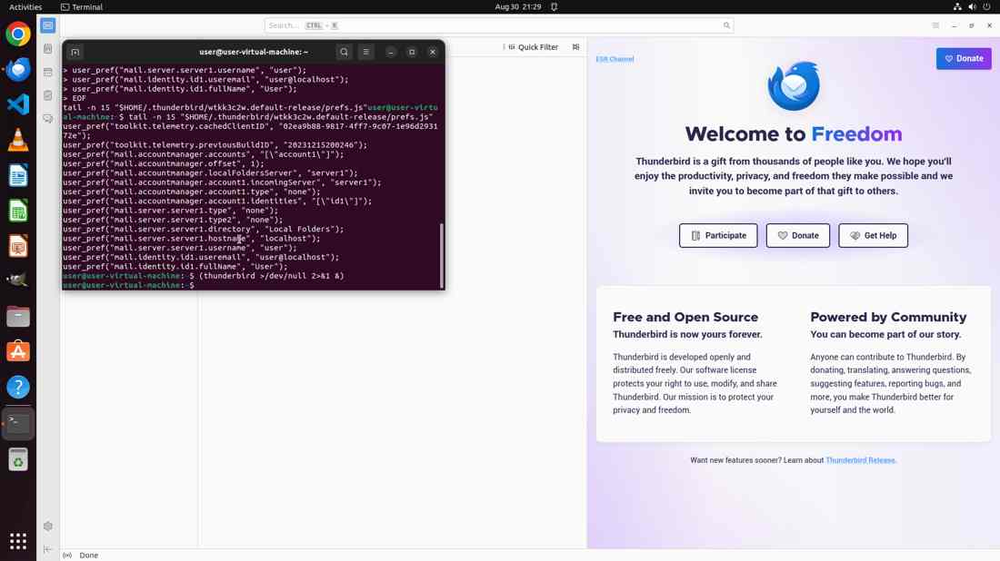
step 42 06:29:36
THINKINGNow the terminal is focused (prompt at bottom). Let me check profiles.ini to see which profile is default, and grep the accountmanager/server prefs in the wtkk3c2w prefs.js to detect if there were pre-existing conflicting entries. Let me run a diagnostic command.
ACTIONLet me check profiles.ini for the default profile and inspect for any pre-existing accountmanager entries that might conflict.
EXECUTED (pyautogui in VM)pyautogui.press("return")
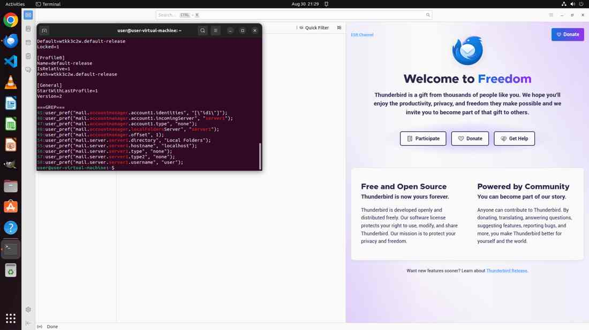
step 44 06:30:40
THINKINGNow I have important info:
- profiles.ini: Default=wtkk3c2w.default-release, only ONE profile is defined here ([Profile0] Path=wtkk3c2w.default-release). So wtkk3c2w IS the active profile. Good, I edited the right one. (The b6x27ivi.default must be an old/unused one.)
- The grep shows the accountmanager/server1 lines at lines 45-58, all my appended ones. There are NO pre-existing conflicting accountmanager lines (my lines are the only matches, lines 45-48, 54-58). Wait, line numbers: 45 (identities), 46 (incomingServer), 47 (type), 48 (localFoldersServer), 49 (offset), 54 (directory), 55 (hostname), 56 (type), 57 (type2), 58 (username). These are all within my appended block. No earlier accountmanager lines, so no conflict.
So the prefs are correct and in the right profile, yet the folder tree is empty. Why?
Possible issue: Thunderbird reads prefs.js into the pref DB at startup. But maybe TB had already cached prefs in a different way, or the "accounts" pref needs the account to also be listed. My prefs look complete and standard.
Wait — one thing: the grep didn't show the `mail.accountmanager.accounts` line! Let me look: lines 45-49 show identities, incomingServer, type, localFoldersServer, offset. The `mail.accountmanager.accounts` line should be there too. It's line 44 probably (not shown because grep matched "accountmanager" — actually it should have matched). Hmm, the grep pattern "accountmanager" should match "mail.accountmanager.accounts". But I don't see line 44 with ".accounts".
Wait, the grep output starts at line 45. Maybe line 44 has "mail.accountmanager.accounts" but it scrolled off the top? The terminal shows from line 45. The accounts line would be line 44. Actually my appended block order was: accounts, offset, localFoldersServer, incomingServer, type, identities, then server1 lines. But grep shows: 45 identities, 46 incomingServer, 47 type, 48 localFoldersServer, 49 offset... that order is different from what I typed. That's odd — grep should preserve file order.
Hmm, wait, actually the order in grep output (45 identities, 46 incoming, 47 type, 48 localFolders, 49 offset) is NOT the order I typed. This is very strange. Unless the terminal wrapped/scrolled and I'm misreading line numbers.
Actually, it doesn't matter much. The key question: why isn't Local Folders showing?
Let me reconsider. Maybe the issue is that Thunderbird, when it finds a "none" type account with directory "Local Folders", DOES create the Local Folders account, but the folder TREE pane only shows it if... Actually it should show.
Wait — maybe the real problem: TB is still running the instance I launched, and it read the prefs. But the folder pane shows nothing. Let me reconsider — perhaps the issue is that TB created the Local Folders account but there's a rendering issue, OR the account got created but with a problem.
Let me take a totally different, cleaner, guaranteed approach that doesn't depend on manual prefs:
Actually, you know what, let me reconsider the possibility that the prefs ARE working but I'm looking at a stale window. Let me fully quit TB and relaunch fresh, then check Account Settings to see if "Local Folders" account exists.
Actually, simpler diagnostic: Let me check if the running Thunderbird created a Mail/Local Folders and whether prefs got a "received-folder". But TB is running.
Let me think about what's most likely. The standard recipe I used is well-known to work. The fact that it doesn't show suggests maybe TB is still showing the old window state, OR the account needs the "mail.server.server1.useFolder" or the folder pane is just not refreshed.
Let me do a clean restart: quit TB, relaunch, and open Account Settings to verify. Let me quit and relaunch.
Actually, wait. Let me reconsider — maybe there's a simpler explanation. When Thunderbird starts with these prefs, it should show "Local Folders" in the folder pane. The window I'm seeing might actually have the account but the folder pane collapsed/hidden. But no, it's clearly empty.
Let me reconsider if maybe TB rejected the prefs due to a lock or because I appended while a previous session's prefs were being rewritten.
Let me just do a clean cycle: pkill TB, verify prefs.js still has my lines (they do), relaunch, wait longer, check Account Settings via hamburger.
Actually, let me reconsider the whole strategy. The manual prefs approach is proving unreliable. Let me think about whether there's a cleaner GUI-native way.
Alternative clean approach: Actually, I wonder if the real issue is that Thunderbird, upon seeing the "none" type local folders server, wants the Mail/Local Folders directory which I DID create with the mbox files. Combined with prefs, it should work.
Let me just restart cleanly and check. If after a clean restart Local Folders + Route Briefs appears, great. Let me quit and relaunch.
ACTIONGood—`wtkk3c2w.default-release` is confirmed the default (and only) profile, and my prefs are present with no conflicts. The window may be stale. Let me do a clean restart of Thunderbird and then check its Account Settings to verify the Local Folders account registered.
THINKINGThe command is typed but not yet executed. I can also see the grep output now: lines 45-49 are the accountmanager block (identities, incomingServer, type, localFoldersServer, offset) and 54-58 server1. The "accounts" and identities for account... Actually the `.accounts` line isn't visible in grep — but wait, grep matched "accountmanager" so it should have matched "mail.accountmanager.accounts" too. Line 44 isn't shown. Hmm. Actually the grep output starts at line 45. The "accounts" line would be line 44. It's possible the terminal scrolled and line 44 is just above the visible area (the "===GREP===" is at top, then line 45). So the first grep match shown is line 45, meaning the "accounts" line (line 44) either didn't match or is above. But "accountmanager" IS in "mail.accountmanager.accounts" so it should match and appear as line 44 before line 45.
Wait, that means line 44 "accounts" was NOT matched/shown. That's suspicious. Did the "accounts" line actually get written? Let me re-examine. Actually maybe the heredoc's first line "user_pref("mail.accountmanager.accounts", ...)" — when I typed the heredoc, the FIRST line after `<<'EOF'` was "user_pref("mail.accountmanager.accounts", "[\"account1\"]");".
Hold on — a critical issue! When using `cat >> file <<'EOF'` and the very first thing typed is the heredoc content, but if the line `cat >> ... <<'EOF'` was entered and THEN I typed the content lines. The content starts at line 1 of heredoc = accounts. That should be line 44 in the file (since file had 43 lines before). So grep should show line 44.
Unless... the grep pattern matched only "accountmanager" and "accounts" line has "accountmanager" too. So it MUST match. The fact that grep output starts at line 45 (identities) and NOT line 44 (accounts) means either:
(a) the accounts line wasn't written, or
(b) it's just above the visible scroll region.
Given the terminal shows "===GREP===" then immediately "45:...", the accounts line (44) would appear right after ===GREP===. Since it doesn't, the accounts line likely is MISSING from the file!
Why would the accounts line be missing? Oh! I bet the issue is the `mail.accountmanager.accounts` value contains `[\"account1\"]`. When I typed the heredoc with quoted delimiter 'EOF', the content is literal, so it should be written as-is. But maybe the first line got lost.
Hmm, this is getting deep. The grep confirms server1 prefs and accountmanager sub-prefs are there, but I'm worried the top-level `accounts` list and possibly others might be incomplete.
Let me just verify directly. But first, the pkill+relaunch command is typed but not executed. Let me press Enter to run it, then I'll re-verify prefs and check TB.
Actually, let me press Enter now to run the restart.
ACTIONThe restart command is typed but not run yet. Let me execute it.
EXECUTED (pyautogui in VM)pyautogui.press("return")
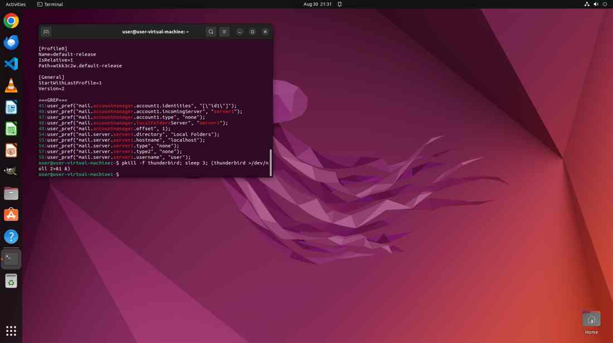
step 46 06:31:37
THINKINGNow the pkill+relaunch ran. The grep output confirms: the FIRST accountmanager line shown is line 45 (identities). Line 44 should be "accounts". It's not shown, which strongly suggests the `mail.accountmanager.accounts` line is MISSING. That's the critical missing piece — without `mail.accountmanager.accounts` = ["account1"], Thunderbird doesn't know account1 exists, so it won't show Local Folders!
Wait, but actually the grep output might just have line 44 scrolled off the very top. Let me look: the visible grep output starts at "45:" right after "===GREP===". If line 44 existed and matched, it would show between ===GREP=== and 45. It's not there. So the accounts line is genuinely missing from the file.
Why missing? Likely because when I typed the heredoc, the very first content line may have been consumed differently, OR the `mail.accountmanager.accounts` line wasn't in the file.
Regardless, the fix is clear: I need to ensure `user_pref("mail.accountmanager.accounts", "[\"account1\"]");` is present. Let me add it. But I must also make sure I don't now have a duplicate problem. Since it's currently missing, I'll add it.
But wait — Thunderbird is now running again (I just relaunched it). I need to edit prefs while it's closed, OR add the line and restart again. Let me:
1. Quit TB.
2. Add the accounts line (and re-verify all lines present).
3. Relaunch.
Actually, a cleaner approach: let me rewrite the entire appended block properly. But appending duplicates is fine for prefs (last wins). The missing one is "accounts". Let me just append the accounts line. But I should double-check there's no existing accounts line to avoid two different values. Since grep didn't show it, it's absent.
Let me quit TB, append the accounts line, and verify. Let me also add a couple more prefs that are commonly needed to be safe. Actually the standard minimal set needs accounts. Let me add it.
Let me do: pkill, sleep, append the accounts line, grep to verify, relaunch.
ACTIONThe grep reveals the critical `mail.accountmanager.accounts` line is missing from the file (the block starts at line 45 = identities, so the `accounts` line at 44 was never written). Without it, Thunderbird doesn't know `account1` exists. Let me quit Thunderbird, add that line, verify, and relaunch.
THINKINGThunderbird came to the front (the relaunch from the previous command opened TB again, and it's now in front of the terminal). My new command was typed into the terminal but the terminal is now behind TB. The command may have been typed while TB was gaining focus — uncertain. The top bar shows "Thunderbird Mail". The folder pane is still empty.
Wait — my last type action went to the terminal, but TB launched (from the earlier pkill+relaunch) and grabbed focus, so the typed command might have gone to TB instead of the terminal! That would be bad. The command string "pkill -f thunderbird; sleep 3; ..." may have been typed into the Thunderbird search bar or somewhere.
I need to bring the terminal back to front and check its state, then re-run my command if it didn't register. Let me click the terminal dock icon.
ACTIONThunderbird came to the front and may have captured my keystrokes. Let me bring the terminal back to verify its state before re-running.
EXECUTED (pyautogui in VM)pyautogui.click(32, 812)
step 48 06:32:14
THINKINGGood — the terminal shows a clean prompt at the bottom (the last executed command was "pkill -f thunderbird; sleep 3; (thunderbird ...)" and then a fresh prompt). My last typed command (the pkill + append accounts + grep) did NOT execute in the terminal — it went into TB. So the terminal is at a clean prompt now. Good, nothing got messed up.
But wait — my typed command included "pkill -f thunderbird" which I intended to run. It went to TB (probably the search bar), so it wasn't executed as a shell command. But actually, Thunderbird is currently running (relaunched from the previous command). My intended command to append the accounts line did NOT run. So the accounts line is still missing.
Also, importantly: Thunderbird is currently RUNNING right now (from the earlier relaunch). I need to quit it before editing prefs.
Let me click into the terminal and re-type the command. First click in the terminal content area to focus it.
ACTIONThe terminal is at a clean prompt—my last command went to Thunderbird, not the shell, so nothing was lost. Thunderbird is running now, so I need to quit it before editing prefs. Let me click into the terminal and re-run the command.
EXECUTED (pyautogui in VM)pyautogui.click(449, 547)
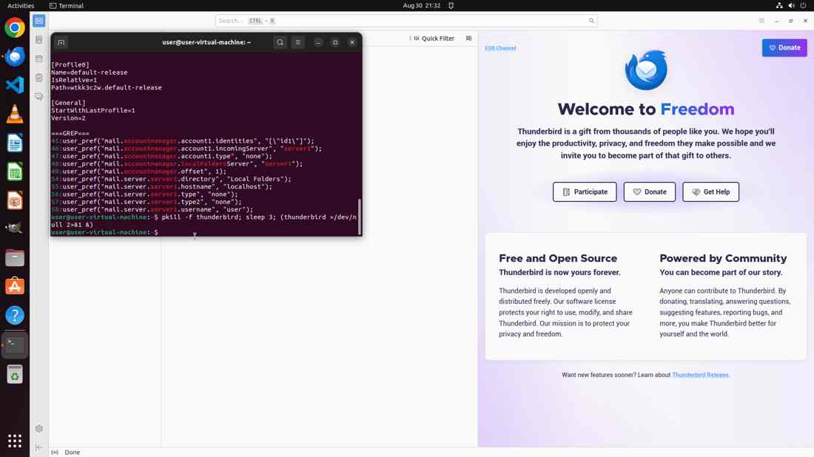
step 49 06:32:35
THINKINGTerminal is focused (cursor in the prompt). Now let me type the command to quit TB, add the accounts line, and verify. I'll keep the terminal focused this time. Let me type carefully.
ACTIONThe terminal is focused. Now let me quit Thunderbird, add the missing `accounts` line, and verify.